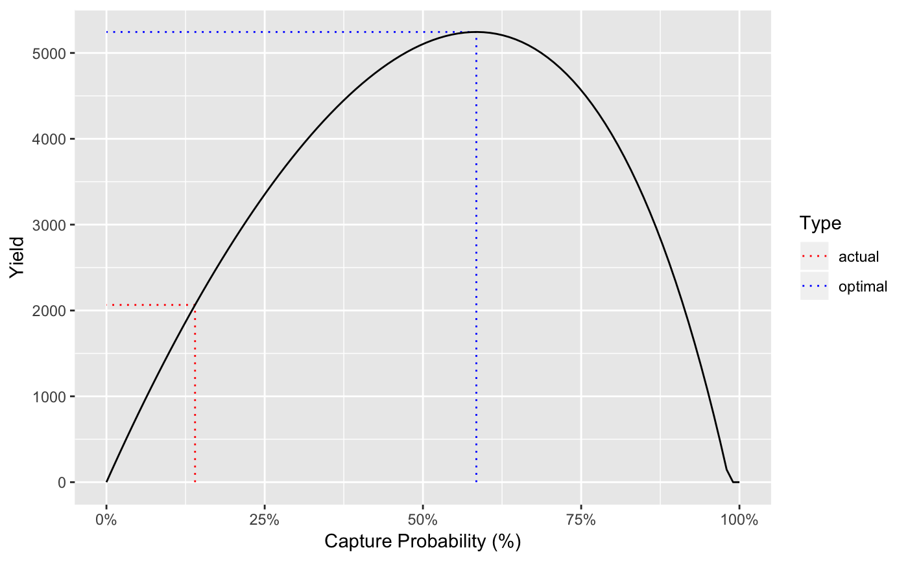

The population parameters for Rainbow Trout in Kootenay Lake.
kootenay_rb
An object of class ypr_population.
The estimates are liable to change and should not be used for management.
Thorley, J.L., and Andrusak, G.F. 2017. The fishing and natural mortality of large, piscivorous Bull Trout and Rainbow Trout in Kootenay Lake, British Columbia (2008–2013). PeerJ 5: e2874. doi:10.7717/peerj.2874.
kootenay_rb#> tmax: 20 #> k: 0.26 #> Linf: 100 #> t0: 0.5 #> Wb: 3.2 #> Ls: 75 #> Sp: 20 #> es: 0.9 #> Sm: 0.53 #> fb: 0.86 #> tR: 1 #> BH: 1 #> Rk: 0.65 #> M: 0.26 #> Mb: 0 #> Lv: 40 #> Vp: 10 #> Llo: 0 #> Lup: 100 #> Nc: 0 #> pi: 0.14 #> rho: 0.62 #> Hm: 0.25 #> Rmax: 115000 #> A0: 0.98 #> Wa: 0.005 #> fa: 3.9 #> Ea: 1 #> Eb: 1ypr_plot_yield(kootenay_rb)